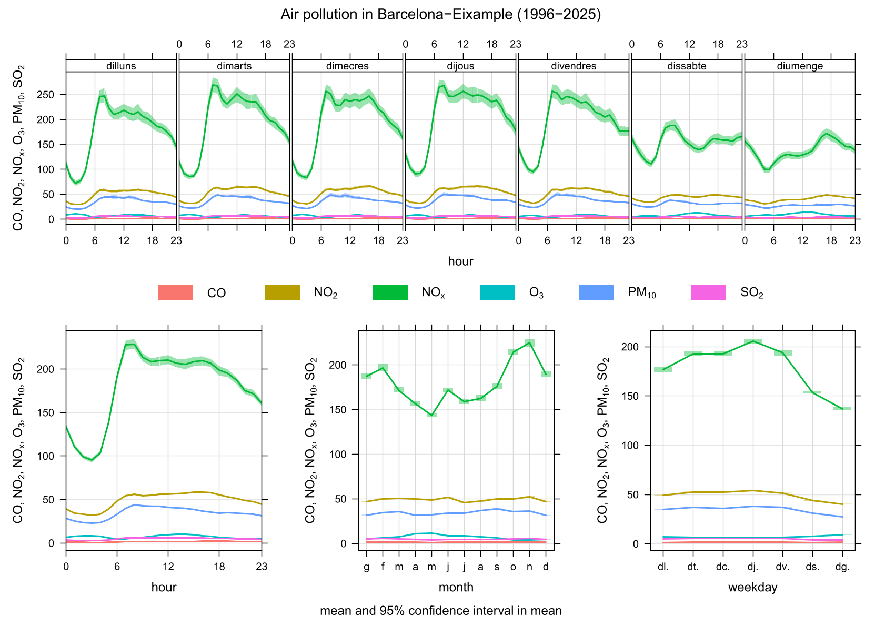

The following graphs show different visualizations of air pollution data measured in Eixample (Barcelona). These plots help understand how pollutant levels change over time and highlight important environmental patterns.
